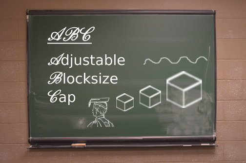

Signatures of third Bitcoin ABC binary release (17 July 2017)
Linux, OSX and Windows Binaries for the 0.14.3 version have been built by deadalnix, sickpig and myself using gitian (reproducible builds).
Tom Zander of Bitcoin Classic independently confirmed the Linux and Windows build using his own gitian.
The binaries can be downloaded from https://download.bitcoinabc.org/0.14.3/ .
-----BEGIN BITCOIN SIGNED MESSAGE-----
Comment: Signed by Bitcoin Armory v0.93.2
I confirm that these are the correct SHA256 checksums of the Bitcoin ABC 0.14.3 release
as per my own gitian build (and confirmed by other builders).
You should be able to obtain these binaries at
https://download.bitcoinabc.org/0.14.3/
freetrader (1Libre7MGkCXr7pUAEbwihCR9X4quYAyQ4)
c14ffbb7070fb98ecd96de1c32211df9120364de501198040ea6b8771dcdb2f9 bitcoin-0.14.3-aarch64-linux-gnu-debug.tar.gz
761a03aa768097995c332a4dcb2274fa8a5bff242a4de6d822f7aa4b0aa0e92c bitcoin-0.14.3-aarch64-linux-gnu.tar.gz
a7d9fc28a79a39541cb6ee54e31ddd114f656140d45df8b2ecffeb27fa63f8ad bitcoin-0.14.3-arm-linux-gnueabihf-debug.tar.gz
f53423204429ef1e0ad46e2ebfec4b3788804431ce91fb02fae70b1fd871b51d bitcoin-0.14.3-arm-linux-gnueabihf.tar.gz
40db57341cf93ef742882c59c3481e12543e9edd195568874ffcdf3b88c5039e bitcoin-0.14.3-i686-pc-linux-gnu-debug.tar.gz
c168560b23f6f5b0ae87ee0d03bc62bbb0b86f22482070f4b79fd8046a0a413f bitcoin-0.14.3-i686-pc-linux-gnu.tar.gz
bbef98d304abb967a802971d907db16fd443abf0a6013ab910880d19e65e3671 bitcoin-0.14.3-osx64.tar.gz
df54afffef0e2151255f42c95ea8f5cac5939dc21000727b35b9aad8aea4d44d bitcoin-0.14.3-osx-unsigned.dmg
57bc3f0c237038a1d5b4f5c5702fe91993371583f9c88cd9dfb5c043862d4359 bitcoin-0.14.3-osx-unsigned.tar.gz
f22d9e625c21688803ee73b7f6fa67a7e567079443175b1f025bfa97681a6b5f bitcoin-0.14.3-win32-debug.zip
c86c821df346667da34f4b8509d8f9e11772c6870b9015590870232919d01076 bitcoin-0.14.3-win32-setup-unsigned.exe
e9050627ac45c651a481fa199419a2c7ab0047f440296805efd6729047f566d3 bitcoin-0.14.3-win32.zip
0d0ee37b5aef0c8fe026c72e75740d3ebf09bc49cd1c20fde0fe81db6156a77c bitcoin-0.14.3-win64-debug.zip
4f3a0480ad417c579dc3b96ab57a46213cae2f7509886fe61bc931bb887c2882 bitcoin-0.14.3-win64-setup-unsigned.exe
21252c740da6d09b14228dc6038d9721647ca289725281987c2e52d5074cc4a2 bitcoin-0.14.3-win64.zip
285791d616538a0f9e9a3c0123da04b4c422d6b356facec84c33dd40a6d795c2 bitcoin-0.14.3-win-unsigned.tar.gz
02acc6d74833f30bea39a64fea871c42a3896033a5dd94d1b761cc8222eb6cb6 bitcoin-0.14.3-x86_64-linux-gnu-debug.tar.gz
403f6e15297414fc29c1b53da1994aa69741fa86afb6ab452fed3c3f14288bf6 bitcoin-0.14.3-x86_64-linux-gnu.tar.gz
5e8bca0ea5d3c3c0d47ef889d5efd528b8d63908dad8ea8de3f714c416b7687e src/bitcoin-0.14.3.tar.gz
-----BEGIN BITCOIN SIGNATURE-----
HMPtffAVx3tV6TqHe0d7xXMvqlaSAvk3byrE7XcfwIRxQ9WRNeHQY0mvq6NBBGvy
okAwhiahdq1QmWy9ORQhc28=
=gKUR
-----END BITCOIN SIGNATURE-----
Thanks to all who made this release possible and are supporting Bitcoin ABC.
Further links:
Official ABC website: https://www.bitcoinabc.org/
Official ABC Twitter: https://twitter.com/Bitcoin_ABC
Subreddit: https://www.reddit.com/r/BitcoinABC/
Support slack (currently at BTCfork): self-invite via https://btcforks.signup.team/
Weekly musing #15 - Signs of growth
ABC contributors growing
The number of contributors to Bitcoin ABC keeps growing, which is encouraging. At this stage, a heartfelt thanks to all who volunteer their time and effort on this project.
I don't want to call out anyone individually, but if you're interested you can of course see the contributions to the project coming in at https://reviews.bitcoinabc.org.
ABC is using Phabricator as its main developer site. Phabricator is a nice (open source) solution for managing projects, with good code review and workflow features.
We are using the Github repository at the moment to push out finished code (releases).
Gearing up for 0.14.3 release
In the upcoming release, we will roll out better branding and client identification for ABC, something that several users had been asking for. Awesome work by the designer of the logo, if you ask me.
There are some changes related to the transaction signing - now ABC produces replay-protected transactions by default when the fork is active.
The release will also include a bugfix for a crash that could happen occasionally, and did happen to some users. Let's hope as we get more eyes reviewing code changes, such things will not re-occur.
Description of the ABC release process
Mengerian and I had a constructive session adapting the document which describes the release process. This document is still in review at this time (https://reviews.bitcoinabc.org/D335). I post the link here because some people are wondering about the process ABC follows to release its software.
I would caution that the processes are still very young and are going to evolve. And there is still a lot of documentation to adapt, but Mengerian has been doing fantastic work on getting it into shape.
Preliminary look at larger blocks with ABC
One question that had been on my mind was:
How big blocks can ABC handle without running into some limitation?
This question had been particularly nagging on my mind since we had an outstanding issue with a test which seemed limited to 16MB blocks.
That turned out to be trivial to fix (the test simply needs to be generalized a bit more).
The next obvious target is 32MB.
Since MAX_PROTOCOL_MESSAGE_LENGTH is set to 32MB, we would expect to be able to produce blocks of almost that size.
And this is true - the test we have now generates blocks of exactly the size requested and so we can easily turn it up to generate a 32MB block. But of course there will be some overhead to wrap that block data into a peer-to-peer protocol message. As the test did not consider this overhead, it will fail when attempting to process a 32MB block.
So, raise MAX_PROTOCOL_MESSAGE_LENGTH? Yes.
Then I tried going to larger blocks. 64 MB?
No. One runs into another limit at around 33554432 bytes. Where does this strange number of ~33,5MB come from? It is of course 32 * 1024 * 1024 bytes, and is another limit encoded in the software (MAX_SIZE in serialize.h).
Can it be raised? Yes, of course. Bitcoin Unlimited for example has raised this to 256MB .
Let us be bold and try doing the same - raising both MAX_PROTOCOL_MESSAGE_LENGTH and MAX_SIZE .
This I did (both to a very large number around 256MB). That should be enough to attempt really large blocks.
I then ran the test with increasing block size by 1MB at each step.
I got up to processing a 134MB block correctly. On the next block my bitcoind process exited with a memory allocation error:
Error: Out of memory. Terminating.
I think my machine has adequate memory, so I have to resume this investigation.
But initial results from this test are very encouraging.
As others have reported in the past, there is massive potential to scale the blocksize dormant in Satoshi's client.
Signatures of first Bitcoin ABC binary release (1 July 2017)
Linux, OSX and Windows Binaries for the initial 0.14.1 version have been built by deadalnix and myself using gitian (reproducible builds). I confirm that the checksums of my build products matched the ones he obtained. Below is a signed copy of my checksums:
The binaries can be obtained at https://download.bitcoinabc.org/0.14.1/ .
-----BEGIN BITCOIN SIGNED MESSAGE-----
Comment: Signed by Bitcoin Armory v0.93.2
79be8529ce0101e2fae0166e7393c6aa65f7aab90c8d4717b686a78380df3e86 bitcoin-0.14.1-aarch64-linux-gnu-debug.tar.gz
6790918f08498329840797377e6d651c9d0f65d605949e44b6d838266c664e00 bitcoin-0.14.1-aarch64-linux-gnu.tar.gz
cf2acfeef0d420ef4d669c61cf38bbde1743dc0b2ebd6ac7fce3becdad74707d bitcoin-0.14.1-arm-linux-gnueabihf-debug.tar.gz
376ad362158c699888a6b6f0454a89ebb3d90cfd4cedafe8c82b166bfa25957f bitcoin-0.14.1-arm-linux-gnueabihf.tar.gz
b8addcb9999c66eeac03d526b479400ad7a2772014b8fcdcb3b44e624d3f4e5d bitcoin-0.14.1-i686-pc-linux-gnu-debug.tar.gz
3186eee56bf64744e0ad087421fccf45c1cf055f70e3be54508d02ea2b50ea75 bitcoin-0.14.1-i686-pc-linux-gnu.tar.gz
2f4d12cef272d55fcd615799ba144b93bec9e2c08dfd30b79bd1af05a3b0a1bd bitcoin-0.14.1-osx64.tar.gz
7d4eda15720bf096efb846a5865637a4c1632c4b110ab4c55970dd89bd267476 bitcoin-0.14.1-osx-unsigned.dmg
43af408ed42edb3b6f5706c6d9e931e0a1cbfb02fc247d058cdf4ddc6d0312dc bitcoin-0.14.1-osx-unsigned.tar.gz
1ec5889f7f5fc0f66375251c2e991e82dce50a878bd8486c772d3a0ff2879c4f bitcoin-0.14.1-win32-debug.zip
2ffd922716e2ffceee375b921d97cb5bab9a5f878f0307cb8d9993e39c9c0768 bitcoin-0.14.1-win32-setup-unsigned.exe
fec7a8e6df9f23642582aaddfa5fb5f92d4ce3ecb7210faa2e87129d89b7c980 bitcoin-0.14.1-win32.zip
9b286ff3ea14f50150153fccdd872da3acd422597051e61de2a0694bf485c7c6 bitcoin-0.14.1-win64-debug.zip
a028e054457fe8813551f03ed8cf0f7d9e545ee63946cb6997c38e0a9964a018 bitcoin-0.14.1-win64-setup-unsigned.exe
7511c83c322231d262d853bd5eaeef2f38f30340b11e7c956d50e3e08e30ae23 bitcoin-0.14.1-win64.zip
8a543285d3b6059de42d0d0cdd9c6dcb14b0ff3c1833e8cfc5fb1ba9a61ab3d3 bitcoin-0.14.1-win-unsigned.tar.gz
9cefef14e3064f9e108b2ad7f19427256d124b6bcbb308619f0d401b17acd963 bitcoin-0.14.1-x86_64-linux-gnu-debug.tar.gz
5e515896efbc2d6f639330146be61fea1ca62913648108d47190c987e539c7af bitcoin-0.14.1-x86_64-linux-gnu.tar.gz
cc6043a53ad4cad5b14a7c9aff3973e5036232da456b572a948d083531069d36 src/bitcoin-0.14.1.tar.gz
-----BEGIN BITCOIN SIGNATURE-----
G3X6BwOjDfo603eICsx+ovubAmAyto1lH3SVr3YeKjHRfiYN0j+QqBiA0af5BRZK
Howxon69EQ994nVq/LyifQI=
=7GT/
-----END BITCOIN SIGNATURE-----
Signatures of second Bitcoin ABC binary release (12 July 2017)
Linux, OSX and Windows Binaries for the 0.14.2 version have been built by deadalnix and myself using gitian (reproducible builds). I confirm that the checksums of my build products matched the ones he obtained. Below is a signed copy of my checksums:
The binaries can be obtained at https://download.bitcoinabc.org/0.14.2/ .
-----BEGIN BITCOIN SIGNED MESSAGE-----
Comment: Signed by Bitcoin Armory v0.93.2
816ea648e33fdcb79ae1b0c9b25f56b1af5cfa07219c7af8e2429e4373349859 bitcoin-0.14.2-aarch64-linux-gnu-debug.tar.gz
743862db46afbbe08dd37b0821a7808c862c99b971c331dba98c0f9eaa98501e bitcoin-0.14.2-aarch64-linux-gnu.tar.gz
c7d00f454b59ef838f35a73a3af72464134b2c320656627d5fc4f5965ad4d966 bitcoin-0.14.2-arm-linux-gnueabihf-debug.tar.gz
5f000ab1af610e725ca52c7e08aec699471d177c9d86c38287ef374f6d80f419 bitcoin-0.14.2-arm-linux-gnueabihf.tar.gz
9a9753f1e52382ea8c613e834290604e6fa1434e8b0741c12cd2da4c7ca7010f bitcoin-0.14.2-i686-pc-linux-gnu-debug.tar.gz
178f8553998ebb2cd2c03ab445d3d7642cd63c50e88a459a005b23f61723d185 bitcoin-0.14.2-i686-pc-linux-gnu.tar.gz
7d1f9f2933ab3842055bebc0c6c78523867f8fc073c5353c0bd493ae83ca8267 bitcoin-0.14.2-osx64.tar.gz
3662e3bce36e04b78fc00b0d4133df92a09867c0f052c1bb4cfca61786707b01 bitcoin-0.14.2-osx-unsigned.dmg
97eb6ee0832a211bf74855b04b2883b867bdd8757716a57a2fd880ac199d1b04 bitcoin-0.14.2-osx-unsigned.tar.gz
09d599b255b58d17c68528cd3d325e385cf70d16b6517d6dceb023ba827d7708 bitcoin-0.14.2.tar.gz
5cea6c47ab15a835d4d763eb6e28e90125050854ba8b1dc1ac8640d76af8df9b bitcoin-0.14.2-win32-debug.zip
975b1e1e8a600475eed58407607e9ae916247821d3b004efdf0a1bc059ef4f38 bitcoin-0.14.2-win32-setup-unsigned.exe
188a5acc3cd52e68f11162d81da3b2aafcf08aa44029e60db9422b99489cce0e bitcoin-0.14.2-win32.zip
871771d17441c25c7ee95decb1c73f30a898631c02b96d2d9954abb53f12877e bitcoin-0.14.2-win64-debug.zip
f7032dd3964e96e9846b3c0e61685e8dfaa520c0560f71abee59e18fcc675b6f bitcoin-0.14.2-win64-setup-unsigned.exe
c6922f07bd88a0ab52d40d5d36b83a540ac33633e7a37c1450389cb0fd9bcee4 bitcoin-0.14.2-win64.zip
260304f4afc1391b5b5a4234cd577634a9987a0b0d35295123def2d49c8c66cf bitcoin-0.14.2-win-unsigned.tar.gz
c836933343d3395a70c70f9d7614c70e48b1e4a5f7ab72eb9ff8d7adaf04ba8f bitcoin-0.14.2-x86_64-linux-gnu-debug.tar.gz
23fbd4aeed885c41d287cec8529ae8f16a7af1ff7571ba63aa6e5a7e520108b7 bitcoin-0.14.2-x86_64-linux-gnu.tar.gz
-----BEGIN BITCOIN SIGNATURE-----
HIv/oPZxlYOCtGrQrXWswz8R22UG6DvW0pUwnwSWfp+7LAWawPILmQj43jwgNfXE
ci7PgaMd/Xf2oJUi52OZWiI=
=wRb/
-----END BITCOIN SIGNATURE-----
Thanks to Redditors for pointing out that signatures should accompany our binary downloads, and should be replicated in various places to prevent tampering.
I intend to keep on publishing my signatures here (although I may switch to a different signing key).
Weekly musing #14 - Preparations for the fork
bitcoinforks.org DNS seeds for ABC
Bitcoinforks.org has set up DNS seeds for ABC on
seed-abc.bitcoinforks.org
testnet-seed-abc.bitcoinforks.org
A simple Python-based seeder software for this is being developed. The coming weeks will show if this is adequate, and can be released, or if we have to revert to a modified version of the popular seeder code by Pieter Wuille.
Investigations on moving ABC to C++14
An interesting suggestion was made in ABC the development forum, to move to C++14 as minimum required language standard.
This has some wide-reaching implications which we still need to research a bit (some Travis tests have already been conducted on a dedicated branch).
Despite being 3 years old, C++14 has only recently seen built-in support by major distributions. For example, you would need Debian 9 or Ubuntu 16.10 (Yakkety) or later for compilation to work out of the box.
On older releases, you may need to obtain packages from channels other than the stable release one.
It is possible to get the Linux build working with C++ on Travis Trusty by providing the right incantations to install an extra gcc6 package built for this purpose.
However, the cross-compilation builds for other platforms make use of other compiler packages which do not support C++14 in their present form, and will need to be updated too. More research is needed to see if Travis provides suitable packages, or if one would have to build them oneself.
Unfortunately Travis does not support Ubuntu Yakkety yet (not even Xenial is formally supported, with no firm roadmap). Maybe ABC has to move to a different system for its CI, if it wants recent compilers.
The gitian build, which uses Ubuntu Trusty, will also be affected by a move to C++14. Some major adaptations will likely be necessary to get a Yakkety or Debian 9 gitian build environment working right.
Weekly musing #13 - It's out!
First release of Bitcoin ABC
An initial version of Bitcoin ABC has been released on Jul 1 2017. Binaries and links to sources and spec can be found at https://www.bitcoinabc.org .
Of course you can now obtain the sources directly from Github too.
Linux, OSX and Windows Binaries for this version have been built by deadalnix and myself using gitian (reproducible builds).
I confirm that the checksums of my build products matched the ones he obtained. Here is a signed copy of my checksums:
-----BEGIN BITCOIN SIGNED MESSAGE-----
Comment: Signed by Bitcoin Armory v0.93.2
79be8529ce0101e2fae0166e7393c6aa65f7aab90c8d4717b686a78380df3e86 bitcoin-0.14.1-aarch64-linux-gnu-debug.tar.gz
6790918f08498329840797377e6d651c9d0f65d605949e44b6d838266c664e00 bitcoin-0.14.1-aarch64-linux-gnu.tar.gz
cf2acfeef0d420ef4d669c61cf38bbde1743dc0b2ebd6ac7fce3becdad74707d bitcoin-0.14.1-arm-linux-gnueabihf-debug.tar.gz
376ad362158c699888a6b6f0454a89ebb3d90cfd4cedafe8c82b166bfa25957f bitcoin-0.14.1-arm-linux-gnueabihf.tar.gz
b8addcb9999c66eeac03d526b479400ad7a2772014b8fcdcb3b44e624d3f4e5d bitcoin-0.14.1-i686-pc-linux-gnu-debug.tar.gz
3186eee56bf64744e0ad087421fccf45c1cf055f70e3be54508d02ea2b50ea75 bitcoin-0.14.1-i686-pc-linux-gnu.tar.gz
2f4d12cef272d55fcd615799ba144b93bec9e2c08dfd30b79bd1af05a3b0a1bd bitcoin-0.14.1-osx64.tar.gz
7d4eda15720bf096efb846a5865637a4c1632c4b110ab4c55970dd89bd267476 bitcoin-0.14.1-osx-unsigned.dmg
43af408ed42edb3b6f5706c6d9e931e0a1cbfb02fc247d058cdf4ddc6d0312dc bitcoin-0.14.1-osx-unsigned.tar.gz
1ec5889f7f5fc0f66375251c2e991e82dce50a878bd8486c772d3a0ff2879c4f bitcoin-0.14.1-win32-debug.zip
2ffd922716e2ffceee375b921d97cb5bab9a5f878f0307cb8d9993e39c9c0768 bitcoin-0.14.1-win32-setup-unsigned.exe
fec7a8e6df9f23642582aaddfa5fb5f92d4ce3ecb7210faa2e87129d89b7c980 bitcoin-0.14.1-win32.zip
9b286ff3ea14f50150153fccdd872da3acd422597051e61de2a0694bf485c7c6 bitcoin-0.14.1-win64-debug.zip
a028e054457fe8813551f03ed8cf0f7d9e545ee63946cb6997c38e0a9964a018 bitcoin-0.14.1-win64-setup-unsigned.exe
7511c83c322231d262d853bd5eaeef2f38f30340b11e7c956d50e3e08e30ae23 bitcoin-0.14.1-win64.zip
8a543285d3b6059de42d0d0cdd9c6dcb14b0ff3c1833e8cfc5fb1ba9a61ab3d3 bitcoin-0.14.1-win-unsigned.tar.gz
9cefef14e3064f9e108b2ad7f19427256d124b6bcbb308619f0d401b17acd963 bitcoin-0.14.1-x86_64-linux-gnu-debug.tar.gz
5e515896efbc2d6f639330146be61fea1ca62913648108d47190c987e539c7af bitcoin-0.14.1-x86_64-linux-gnu.tar.gz
cc6043a53ad4cad5b14a7c9aff3973e5036232da456b572a948d083531069d36 src/bitcoin-0.14.1.tar.gz
-----BEGIN BITCOIN SIGNATURE-----
G3X6BwOjDfo603eICsx+ovubAmAyto1lH3SVr3YeKjHRfiYN0j+QqBiA0af5BRZK
Howxon69EQ994nVq/LyifQI=
=7GT/
-----END BITCOIN SIGNATURE-----
As you can see, the names of the build products are still using just 'bitcoin' . To avoid confusion, maybe it is better to rename them to 'bitcoinabc' in future.
Although I had set up my gitian build environment on a fast native machine (not a virtual machine), I was surprised at how long the build actually took. It was still a multi-hour process to get all binaries out, but building natively made a big difference compared to my previous gitian builds for BU.
I came across a couple of snags following the "official" gitian build instructions. At a later stage I will make a separate post about how to configure
Gitian natively and using LXC, as that is not well described. The last obstacle was my machine's firewall (isn't it always  )
)
Code comparison to Core 0.14.1
In order to make it easier for interested persons to review the ABC diff, I created a reformatted branch of the original Core code on which ABC was developed. Only the files that ABC also modified have been reformatted, to eliminate some of the difference between the old and new (ABC) code that is just due to formatting.
Further instructions on this can be found in the /r/bitcoinabc subreddit in this post:
https://np.reddit.com/r/BitcoinABC/comments/6kownu/comparing_the_abc_code_to_core/
Next steps
There are some small cleanups to make to improve the ABC release for beta testing.
I plan to have look at some of those during the coming week:
- improved debug messages and RPC output related to UAHF fork
- resolve as many FIXME's as possible
- revisit test plan and check with requirements what is still outstanding in terms of tests
Certainly, some more intensive big-block tests should be added to the regression test suite.
And hopefully public testing will not raise any serious bugs.
There are some platforms like ARM for which the Gitian builds have produced binaries, but we have not yet tested them at all (often due to lack of test platforms).
This is something where we will depend on feedback from users in the short term.
Weekly musing #12 - Gearing up for release
Final touches on ABC
Bitcoin ABC is a modified version of Bitcoin Core with a user-configurable maximum blocksize, i.e. an Adjustable Blocksize Cap (hence "ABC").
It is based on Core 0.14.1, and implements the UAHF specification. The source code and development can be found at https://reviews.bitcoinabc.org .
We've been very busy getting this to near release so far. There are a few minor finishing touches remaining on the code, but it's almost feature complete.
In a follow-up post I'd like to do a walk-through post of the changes at some stage, but this requires reformatting the baseline (the Core 0.14.1 commit where ABC branched off) so that we can cleanly compare what was built on top.
The difference looks bigger than it really is in terms of code changes, because nearly the entire codebase has been put through clang-format to clean up the source code.
This obscures the significant functional changes to an extent.
A git diff --stat shows 508 changed files so far - that includes files that were newly added (e.g. ABC tests) and files that were removed (e.g. those related purely to SegWit).
Re-formatting the baseline 0.14.1 with the same style rules to get a clean comparison requires some touch-ups. This is because some sections in ABC were protected from clang-format's modifications. There are also manual formatting actions to improve layouting of comments, although these are easy to ignore. Overall, there were 337 commits since development on top of Core commit 964a185cc began.
It could be helpful to mark the functional changes related to UAHF with their respective requirements.
Test framework issues
We have identified what is likely an issue with the Python test framework's handling of peer messages.
During tests with large blocks, the test framework's mininode may run into buffering problems on the received data, which often leads to test failure. This only seems to happen towards the end of one big-block test at the moment, and there is a workaround to reduces the chance of this happening.
However, it is very likely that we need to re-work the test framework's message buffering and processing if we want to be able to do very-large-block tests.
Perhaps this played a role in previous tests where we struggled to test > 16MB blocks.
On testnet3, the forked client has produced blocks over 15MB already which were well received by its peers.
Weekly musing #11 - Homework
|  |
{kind=link}
Bitcoin ABC
Work is progressing towards the Bitcoin ABC implementation. Already it was able to digest blocks slightly larger than 8MB on BU's no-limits testnet. In regression tests, sizes up to 16MB have not posed a problem.
Scaling Bitcoin Core may not be as simple as adjusting a single constant, but ABC proves it can be done.
UAHF
The release of the UAHF contingency plan [3] and the accompanying technical specification [4] marked a decisive answer to the threat posed to Bitcoin's security by BIP-148 (UASF).
ABC adaptations for the counter HF to the upcoming UASF are in an advanced stage and expected to be ready for validation soon.
Bitcoin Unlimited
BU is working on a UAHF-compatible specification [5]. It is provisionally called 'BUIP-HF'. Development is going to be channeled through the 'buip-hf' branch on my Github repository, from where I will feed Pull Requests back to BU.
A guidance document has been created for contributing BU developers.
Preparations are also underway for another point release of BU prior to a major release later this year which should bring most of the 'dev' branch changes over to 'release'.
BTCfork MVF
I'm considering adapting the SegWit trigger condition of the MVF's to take into account the planned SegWit2x activation conditions (which seem to have swung in favor of BIP-91 now). Still to be decided, but my stance is unchanged - in the event of SegWit activating on the main chain, there should be a spin-off to provide a SegWit-free alternative. This could be UAHF, but since that is planned to activate some hours after UASF, it could make sense to activate an earlier spin-off at the same time as UASF.
References
[1] Image of blackboard derived from https://commons.wikimedia.org/w/index.php?curid=36633029
by Raysonho @ Open Grid Scheduler / Grid Engine - own work, CC0
[2] Image of academic with square cap derived from https://commons.wikimedia.org/w/index.php?curid=14939026
by Gardner Cotrell Leonard - “Academic Costume.” in A Cyclopedia of Education, edited by Paul Monroe, 17, New York: The Macmillan Company, 1911., Public Domain
[3] UAHF: A contingency plan against UASF (BIP148)
Weekly musing #10 - Learning the ABC's
Bitcoin ABC
Bitcoin ABC - short for Adjustable Blocksize Cap , is a big-block capable client based on Core 0.14.1 that is progressing in development and gaining more contributors and code reviewers.
Parts of the main functionality (being able to adjust the block size cap through a configuration option) have now been implemented for the command line client. Others remain to be added, for example being able to display its accepted block size limit in the well-known /EBx/ format used by BU and Classic.
A version of ABC should be out for testing in the next few weeks!
Bitcoin Unlimited
A specification for a hard fork release along the lines of BUIP 055 is taking shape. I have had the pleasure of collaborating with various developers and stakeholders in drafting this, and it is nearing completion.
Many refinements have been made over BUIP 055.
For example, there is provision for bi-drectional replay protection, and protection against re-organization by the legacy chain.
BTCfork
With a wide variety of projects rallying around the idea of a near-term HF, elements of BTCfork's MVF may come in useful for implementors of other clients.
In particular, clients targeted at end users might benefit from the automatic wallet backup functionality written by redmarlen (a fellow BU developer too). This could be integrated into other fork clients quiet easily.
Weekly musing #9 - The freedom to choose your own cap
 |
Bitcoin Unlimited
Voting is over, and the results for this round of BUIPs and new member applications is in. Congratulations to the new members! The new system was quite pleasant to use. I hope it will continue to get improvements. One that most of us would probably like is batched voting, so one doesn't have to sign for every issue individually.
To those applicants who did not get in this time, I hope you will apply again and participate in the meantime! Some clearly did not make it in because existing members abstained or voted in low numbers, which troubles me a little. I think 21/49 voter turnout is not that great - certainly room for improvement.
Improvement Proposals
On the BUIP side, I am happy that BU has passed the BUIP026 to offer bounties for exploitable bugs.
CompactBlocks were accepted by a nice majority, so they will become reality in BU! This should lead to bandwidth savings all around. With BU's network code undergoing big refactorings on the development branch, it will be a bit of a challenge to develop, but nothing insurmountable. Existing tests from Core and XT can hopefully be re-used with minor adaptations.
I'm also excited about BUIP052 - this should get the project a separate Continuous Integration service for daily tests of the whole test suite. BU contributor awemany has been investigating fuzz testing, which would be a good thing to include on such daily tests.
A bit disappointing is that BUIP053 and BUIP054 did not reach quorum, and had to be closed despite quite solid majorities in favor of these proposals. It was just not enough this time around.
BUIP053 (Tweakable DoS responses) in particular is one I had high hopes for in terms of moving us away from a relatively static and inflexible scoring/banning design, towards something that places more power in the hands of users and reduces the impact of (potentially bad) developer decisions.
Also great news is that both BUIP055 (hard fork in near future) and BUIP056 (support-threshold triggered block size increases) were passed. The first one indicates that membership clearly recognizes the urgent need to act in offering a definite hard fork to the market, especially in light of the threat of UASF. BUIP056 appears a good way to reach consensus within the EB signaling framework pioneered by BU but which is being adopted by other clients such as Classic and hopefully more in future.
BUIP057 (BIP135 support) could be useful for future upgrade deployments, due to its flexibility in configuring activation thresholds and grace periods for proposed forking changes (whether soft or hard).
Nolnet reboot
Initial testing on BU's rebooted Nolnet (no-limits testnet) suggests there could still be issues related to unwanted node banning during block header synchronisation.
But the rebooted parameters of the network will ensure that Nolnet addresses are different from ordinary Bitcoin addresses, and so avoid possible mistakes that could result in some financial loss. Nolnet will also reset to minimum difficulty now, so that locking out testers by raising the difficulty to a very high value will not be possible so easily (at least, not for long periods).
BTCfork
The new Nolnet settings need to be integrated into MVFs, as I plan to have the MVF's be able to participate in fork tests, also w.r.t. BUIP055.
I found an embarrasing bit shifting bug in the replay protection code. Thanks go to Tom Harding for inspiring me to look over it again.
Funny how one can get inspired to look carefully at one's code when someone else is interested in it too
Another small change that seemed prudent, was to bypass the MVF's adjusted difficulty retargeting code if the user specified that the difficulty was not to be reset at the fork activation. So now, if diffdrop=1, only the old difficulty code path is used. I had not really thought much about minority forks which want to keep the difficulty the same, but if there are such, then it's better to carry on running the existing code.
Bitcoin ABC
Still working on the ABC functionality - have been mostly reviewing changes by the project lead.
References
[1] Image of Asics cap: public domain (CC0) by freetrader freetrader@tuta.io
This blog is powered by ikiwiki.